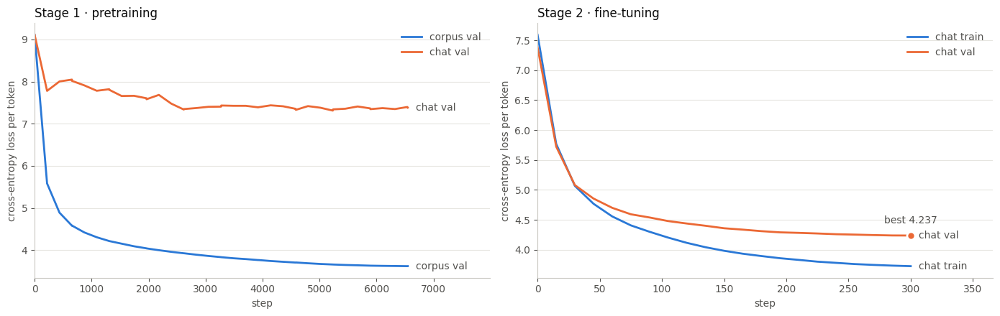
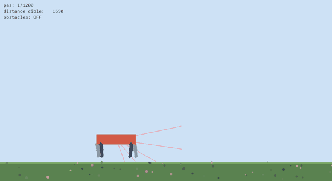
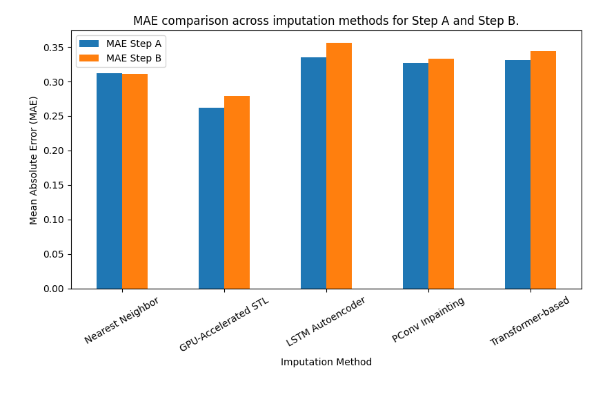
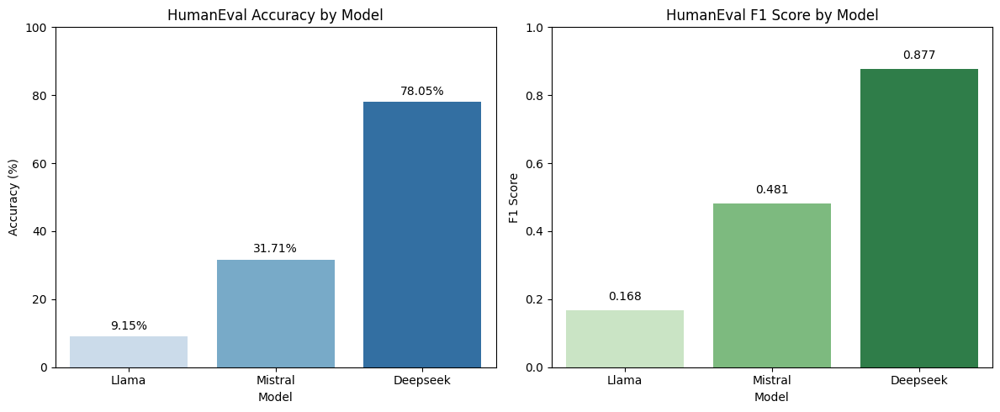
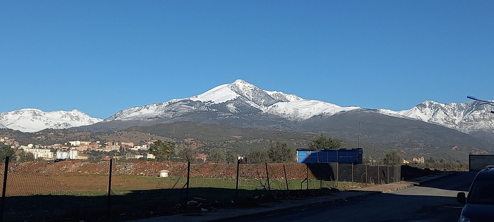
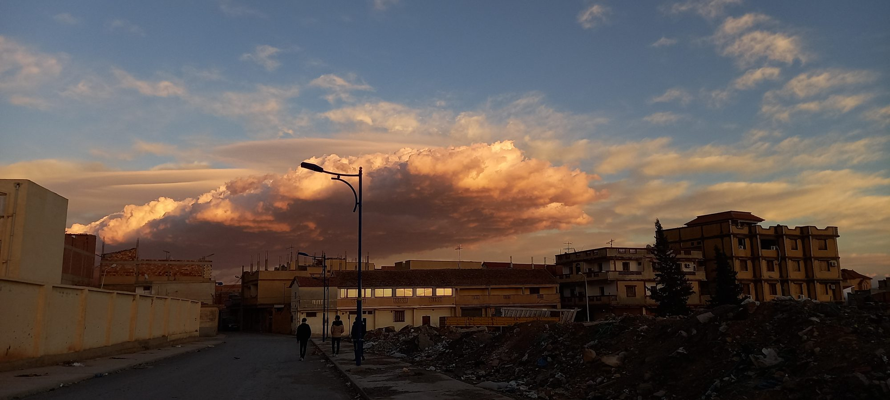
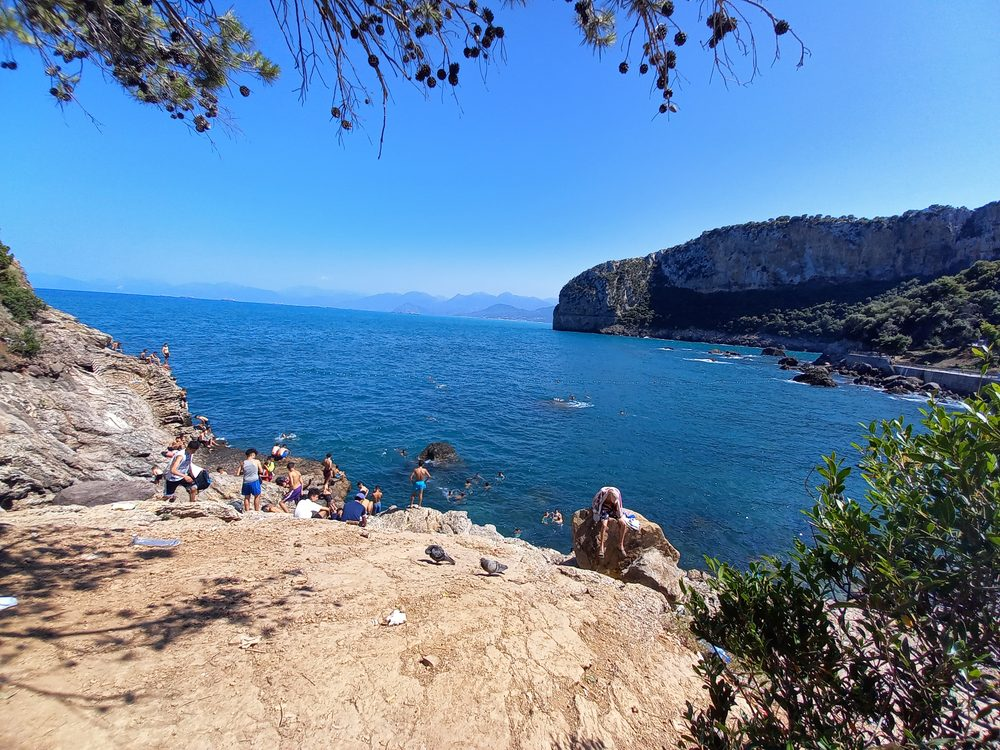
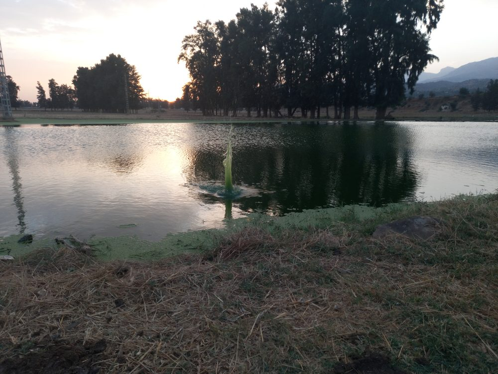

La version courte
Amar Merabti, data scientist
- Formation
- M2 Données, Connaissances et Intelligence, Université Paris Cité — major de promotion (16/20). Licence et M1 SII à l'USTHB, Alger.
- Expérience
- Nricher (2026, 6 mois) : vérification d'attributs produit par inférence textuelle et TabPFN, 0,925 d'exactitude équilibrée. ENAGEO, groupe Sonatrach (2023–2024) : stage puis un an de CDD sur des diagraphies de puits traitées comme des séries temporelles (LSTM) : imputation (MAE 12,7) et prédiction d'un puits à l'autre, corrélation portée de 0,52 à 0,82.
- Projets
- Un modèle de langue de 36,3 M de paramètres entraîné de zéro pour le kabyle ; un benchmark de LLM open source ; des agents qui apprennent le football par self-play.
- Outils
- Python, PyTorch, Transformers, scikit-learn · Kafka, Spark, MongoDB, SQL · Java, C/C++
- Langues
- Français et anglais (bilingue), arabe (courant), kabyle (langue maternelle)
Amar Merabti
Data scientist — modèles de langue, NLP, données imparfaites
En entreprise, j'ai travaillé sur des données que personne n'avait préparées pour moi. Chez Nricher, j'ai conçu une vérification automatique d'attributs produit qui valide 68 % des valeurs à 99 % de précision. Chez ENAGEO, groupe Sonatrach, j'ai reconstruit par LSTM des mesures de puits manquantes, d'un puits à l'autre. Et pour comprendre les modèles de langue de l'intérieur, j'en ai entraîné un de zéro pour le kabyle, ma langue maternelle.
Six expériences
Chaque projet part d'une question. Je note ce que j'ai fait, ce que j'ai mesuré, et ce qui n'a pas marché : c'est souvent là que j'ai le plus appris.
-
Exp. 01
Peut-on entraîner un modèle de langue pour une langue qui n'a presque pas de données ?
Tout le kabyle écrit disponible représente environ 40 millions de tokens, en partie enfermés dans des PDF aux polices d'avant Unicode. J'ai écrit le décodeur de ces polices, construit un corpus de 120 millions de caractères, puis pré-entraîné un Transformer de type Llama avant de l'affiner sur des messages de discussion.
Ce qui n'a pas marchéMon premier modèle (43 M de paramètres pour 1 M de tokens) a appris son corpus par cœur : perte de 1,33 à l'entraînement, 6,21 en validation. Il était environ 800 fois trop gros pour ses données.
1,977bits par caractère en validation après pré-entraînement et fine-tuning, contre 2,046 sans pré-entraînement
-
Exp. 02
Comment vérifier une valeur extraite d'une fiche produit quand le catalogue du client n'est pas fiable ?
Chaque couple attribut/valeur devient une hypothèse, confrontée phrase par phrase à la description du produit par inférence textuelle (mDeBERTa-v3). Ces scores, complétés par des embeddings BGE-M3, alimentent TabPFN. Le banc d'essai réunit 4 catalogues de production : 35 attributs, 30 919 lignes et 5 635 exécutions appariées, avec une référence construite sans annotation manuelle.
Ce que l'ablation a montréRetirer les 4 scores d'inférence coûte 8,9 points ; retirer les 50 composantes d'embedding n'en coûte que 1,9 (test de Wilcoxon). C'est l'orientation de la représentation du texte, pas sa richesse, qui décide.
Lire l'expérience →code propriété de Nricher, non publié68 %des valeurs validées automatiquement, à 99 % de précision0,925d'exactitude équilibrée, contre 0,808 pour la règle d'inférence seule et 0,898 pour TabSTAR, 28 fois plus coûteux -
Exp. 03
Que peuvent apprendre des agents à qui l'on ne donne aucune règle ?
J'ai écrit un moteur de football 2D en NumPy (proportions FIFA, possession, tacles, collisions) et entraîné par PPO une seule politique qui joue les deux camps : deux joueurs apparaissent au hasard sur le terrain et cherchent à marquer, sans qu'aucune règle de jeu ne soit codée dans l'agent. 36 millions de pas en 48 minutes, sur un portable sans GPU. En parallèle, un quadrupède simulé avec pymunk apprend à marcher jusqu'à un drapeau avec Stable-Baselines3.
Ce qui n'a pas marchéLe shaping par potentiel, pourtant le plus sûr en théorie, ne donne aucun signal quand tous les matchs se terminent : 1 % de victoires. Le réservoir d'adversaires à la AlphaStar perd contre le self-play miroir. Et mes premières évaluations, sur 12 matchs depuis un coup d'envoi fixe, ne mesuraient en réalité qu'un seul match répété. Le quadrupède, lui, n'atteint jamais sa cible au milieu d'obstacles (0/20).
73 %de victoires contre un joueur scripté, sur 500 matchs, contre 19 % de défaites
Quadrupède : 20/20 cibles atteintes sur sol plat, 16/20 sur terrain ondulé -
Exp. 04
Pour combler les trous d'une série temporelle, le deep learning bat-il une méthode classique ?
Des compteurs électriques de 3 127 foyers, 12 864 mesures chacun, 30 à 50 % de valeurs masquées. Nous avons comparé un plus proche voisin, un autoencodeur LSTM, un U-Net à convolutions partielles, un Transformer auto-supervisé et une décomposition STL réécrite en PyTorch pour tourner sur GPU.
RéponseNon, pas ici. La STL gagne sur les deux scénarios, y compris sur 1 098 foyers jamais vus : saisonnalité et tendance sont exactement la structure de ces données, et les modèles profonds ont dû être réduits pour tenir sur 4 GPU.
0,262MAE de la STL sur GPU, contre 0,327 pour le meilleur modèle profond (U-Net)
-
Exp. 05
Que valent trois LLM open source de 7 milliards de paramètres en maths, en bon sens et en code ?
LLaMA 2, Mistral et DeepSeek-R1 distillé, servis par Ollama sur 4 GPU L4 : GSM8K en 8-shot, HellaSwag et HumanEval en 0-shot, avec exécution du code généré dans un bac à sable et analyse des types d'erreurs Python.
NuanceDeepSeek-R1 domine le code, mais son raisonnement long le rend environ 100 fois plus lent, et il n'a donné de réponse exploitable qu'à 258 questions de maths sur 500. Mistral offre le meilleur compromis entre précision et latence.
128/164problèmes HumanEval résolus par DeepSeek-R1 (78,0 %), contre 52 pour Mistral et 15 pour LLaMA 2
-
Exp. 06
Peut-on reconstruire une mesure de puits là où elle manque, et la prédire dans un autre puits ?
Le long d'un puits, on mesure à intervalles réguliers des caractéristiques de la roche comme l'élasticité ou la densité. Ces séries ont des trous (appareil défaillant, données perdues) et les mesures coûtent cher. En stage, j'ai testé des modèles classiques d'un puits à l'autre et livré une application Java Swing aux géophysiciens. En CDD, j'ai traité ces séries comme des séries temporelles, avec des LSTM et des RNN : pour combler les trous d'un même puits, puis pour prédire la même caractéristique dans un autre puits.
Ce qui n'a pas marchéEn stage, la régression linéaire (r = 0,15) et le SVM (0,29) ne généralisaient pas d'un puits à l'autre. Et même à 0,82 avec les LSTM, la prédiction ne suffisait pas encore pour être exploitée par l'entreprise : j'ai laissé le projet en cours en partant en France.
0,52 → 0,82de corrélation d'un puits à l'autre, du stage (MLP) au CDD (LSTM), avec une MAE passée de 21,4 à 15,812,7de MAE pour combler les trous d'une série dans un même puits (RMSE 15,2)

Parcours, en diagraphie
Mes premiers modèles prédisaient des diagraphies de puits. Voici mon parcours dessiné de la même façon : la profondeur, ce sont les années ; les colonnes, ce que j'ai appris et où.
Courbes : intensité d'usage de chaque domaine, estimée par moi. Motifs : formations ; bandes orangées : entreprises.
Version texte du parcours
- 2020Baccalauréat sciences expérimentales, mention Bien (Algérie).
- 2020 – 2023Licence informatique, USTHB (Alger). Premiers jeux en C avec SDL, gestion de bibliothèque en C (L2), messagerie Android Aqessar, compilateur Flex/Bison, extraction d'information avec Unitex.
- févr. – juin 2023Stage machine learning chez ENAGEO (groupe Sonatrach) : mémoire de licence sur la prédiction de paramètres géomécaniques.
- 2023 – 2024M1 Systèmes Informatiques Intelligents, USTHB, en parallèle d'un CDD de développeur IA chez ENAGEO : diagraphies traitées comme des séries temporelles avec des LSTM, imputation et prédiction d'un puits à l'autre (corrélation portée à 0,82).
- 2024 – 2025M1 Données, Connaissances et Intelligence, Université Paris Cité : benchmark de LLM, imputation de séries temporelles, solveur d'argumentation.
- 2025 – 2026M2 DCI, major de promotion (16/20) : qualité des données, streaming, extraction temporelle. Stage de data scientist chez Nricher (févr. – août 2026), KabyLLM et agents RL.
- oct. 2026Prochaine étape : thèse CIFRE ou CDI de data scientist.
L'atelier
Les autres projets, des premiers jeux en C aux pipelines de données. Tous sont publiés sur GitHub, avec leur README.
-
2026
Kotlin · WebRTC · Firebase · Node.js Code ↗
Siwel
Appels de groupe audio et vidéo entre téléphones, y compris derrière des réseaux mobiles restrictifs, grâce à un serveur TURN auto-hébergé.
-
2026
LightGBM · XGBoost · CatBoost · PyTorch Code ↗
Prévision de l'activité de pêche
Challenge shipd.ai : prédire les heures de pêche d'un navire à 1, 2 et 3 jours, sur 480 192 lignes.
-
2025–2026
Kafka · PySpark · MongoDB · Streamlit Code ↗
Recommandation e-commerce en temps réel
Des événements rejoués dans Kafka, des recommandations recalculées à chaque action, leur pertinence mesurée en direct.
-
2025–2026
pandas · GeoPandas · ydata-profiling Code ↗
Qualité des données NYC Taxi
Mesurer puis réparer : complétude, exactitude, cohérence et unicité, pondérées selon l'usage ; coordonnées GPS reconstruites par la formule de Haversine.
-
2025
BERT · HeidelTime · Java Code ↗
Extraction d'expressions temporelles
HeidelTime contre BERT sur des textes historiques, médicaux et des tweets : BERT atteint un F1 de 95,5 % sur les tweets (correspondance souple), loin de son domaine d'origine.
-
2024–2025
Keras · Spark ML · MySQL Code ↗
Sentiment sur 1,6 million de tweets
Une première version en Keras (LSTM), reprise un an plus tard avec Spark ML et une base MySQL.
-
2025
Python · Tkinter Code ↗
Visualiseur de réseaux de neurones
Construire un réseau à la souris, régler poids et biais, et voir la propagation avant neurone par neurone.
-
2024–2025
Python Code ↗
Solveur d'argumentation abstraite
Extensions complètes et stables d'un système d'argumentation de Dung, acceptation crédule et sceptique.
-
2024–2025
Flask · SQLAlchemy · Bootstrap Code ↗
WatchBid
Site d'enchères de montres de collection : comptes, catalogue filtrable, mise en vente et offres.
-
2024
Java · Swing Code ↗
Sac à dos multiple
Recherche en profondeur, en largeur, A*, algorithme génétique et essaim d'abeilles, comparés dans une interface Java.
-
2023
C · Flex · Bison Code ↗
Compilateur MiniPy
Analyse lexicale et syntaxique d'un langage inspiré de Python, table des symboles et génération de quadruplets.
-
2022–2023
Unitex · Python Code ↗
Médicaments et posologies avec Unitex
Un dictionnaire construit depuis le Vidal, enrichi par le contexte, puis des graphes de règles pour repérer doses, rythmes et durées.
-
2022
Java · Firebase Code ↗
Aqessar
Une messagerie Android avec une interface en kabyle : comptes, invitations, discussions en temps réel.
-
2022–2023
Java · Processing Code ↗
Sketches Processing
Snake, démineur, billard, jeu de la vie, fourmi de Langton et fractales.
-
2021–2022
C · listes chaînées · files Code ↗
Gestion d'une bibliothèque
Ouvrages, étudiants, emprunts et pénalités, avec des files d'attente premium et classique écrites à la main sur des listes chaînées.
-
2021
C++ · SDL 1.2 Code ↗
Mini-jeux SDL
Mes premiers programmes graphiques, appris seul : un shoot'em up, un serpent, un pong et un mini-golf.

Ce que je cherche
À partir d'octobre 2026, deux voies m'intéressent autant l'une que l'autre.
Une thèse CIFRE
Je cherche un sujet où la donnée pose problème : rare, bruitée, incomplète ou peu fiable. Modèles de langue et NLP, données tabulaires, médicales ou biologiques, physique, chimie : le domaine m'importe moins que la question scientifique et son utilité pour l'entreprise.
- Une première expérience de recherche en entreprise : mon mémoire chez Nricher portait sur 4 catalogues de production.
- Des protocoles rigoureux : références sans annotation manuelle, ablations, tests appariés, calibration.
- L'habitude d'implémenter moi-même, du Transformer au moteur de simulation.
Un CDI de data scientist
Je veux rejoindre une équipe qui construit des modèles utilisés pour de vrai, et où l'on mesure ce qu'ils valent avant de les déployer.
- Des chaînes complètes : ingestion avec Kafka et Spark, modèle, évaluation, application.
- Deux expériences en entreprise avec des résultats mesurés : ENAGEO (0,52 → 0,82) et Nricher (68 % automatisé à 99 % de précision).
- Une aisance avec les LLM, du fine-tuning au benchmark.
Azul — bonjour, en kabyle.
Le kabyle est ma langue maternelle, et très peu d'outils numériques le comprennent. KabyLLM et Aqessar viennent de là ; mes premiers programmes, eux, étaient des jeux en C écrits seul en 2021.
J'ai fait ma licence et mon premier master à l'USTHB, à Alger, en travaillant en parallèle pour ENAGEO. J'ai ensuite rejoint l'Université Paris Cité pour le master DCI, terminé major de promotion.
En dehors des modèles : le football, la musique et la photographie. Les photos de ce site sont les miennes.
- Langues
- Kabyle (maternelle)
Français, anglais (bilingue)
Arabe (courant) - Outils du quotidien
- Python, PyTorch, Transformers
scikit-learn, pandas
Kafka, Spark, MongoDB, SQL
Java, C/C++, LaTeX - Sur le web
- github.com/MerabtiAmar
LinkedIn


Un sujet de thèse, un poste, une question sur un projet ?
merabtiamar91@gmail.com- CV thèse CIFREFR · PDF
- CV PhDEN · PDF
- CV data scientistFR · PDF
- CV data scientistEN · PDF